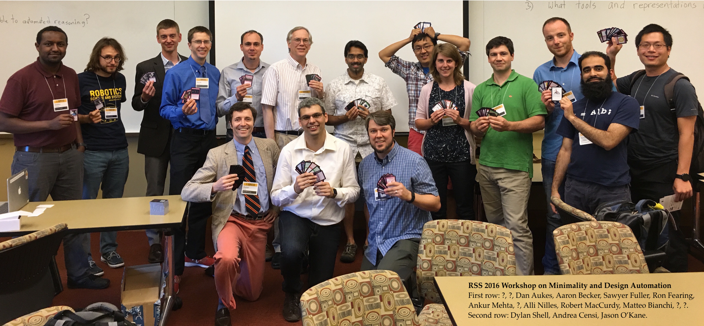

Organizers: Andrea Censi (MIT), Dylan Shell (Texas A&M), Jason O'Kane (South Carolina)
Saturday, June 18, 2016, Full Day
Location: North Quad 2245

Simpler robots are better, but it gets complicated. How can computers help us?The theoretical question of determining the fewest resources necessary to perform a task is practically useful and intellectually deep. This question remains fundamentally open. There are few examples of impossibility results or studies that show a systematic understanding of the relationship between functionality and resources involved in a robotic system. The "functionality → minimal resources" map is hard to describe, and the resulting optimization problem "given the functionality required, find the feasible designs that use the least resources" is hard to solve.
This workshop brings together researchers in two emerging areas:
The format will include:
| 9:00–9:30 | Dylan Shell Welcome and Introduction (Slides) |
| 9:30–9:45 | Andrea Censi Co-Design Problems in Robotics (Slides) |
| 9:45–10:00 | Jason O'Kane Design Automation is Hard. Deal with It. (Slides) |
| 10:00–10:30 | Break |
| 10:30–10:45 | Sawyer Fuller Don't Model Things. Just Build Robots. (Slides) |
| 10:45–11:00 | Matteo Bianchi Minimality and Under-Sensing: A Human-Inspired Approach (Slides) |
| 11:00–11:15 | Ron Fearing Minimal Actuation in Legged Locomotion (Slides) |
| 11:30–11:45 | Dan Aukes Automating the Design Process for Folding Laminate Device (Slides) |
| 11:45–1:45 | Lunch |
| 1:45–2:00 | Greg Chirikjian From Binary-Actuated Manipulators to Lie Groups (Slides) |
| 2:00–2:15 | Aaron Becker Minimality in Control: Sometimes Less is All You've Got (Slides) |
| 2:15–2:30 | Yu Zhang Minimality in Multi-Robot Sytems (Slides) |
| 2:30–2:45 | Hadas Kress-Gazit Synthesizing Robots from Specifications (Slides) |
| 2:45–3:00 | Ankur Mehta Personal and Ubiquitous Robots (Slides) |
| 3:00–3:30 | Introduction to The Robot Design Game |
| 3:30–4:00 | Break |
| 4:00–5:15 | The Robot Design Game |
| 5:15–5:30 | Discussion |
Updated June 2017: Please see here for all about the Robot Design Game .
Below, some of the peer-reviewed solutions found during the games.